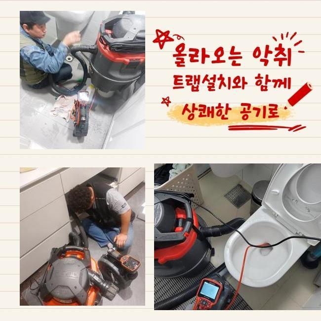
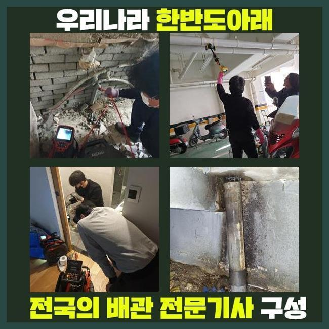
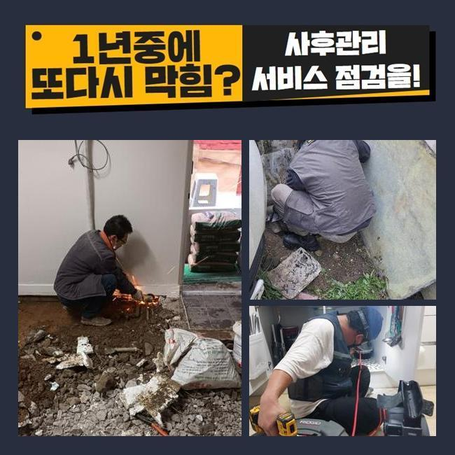
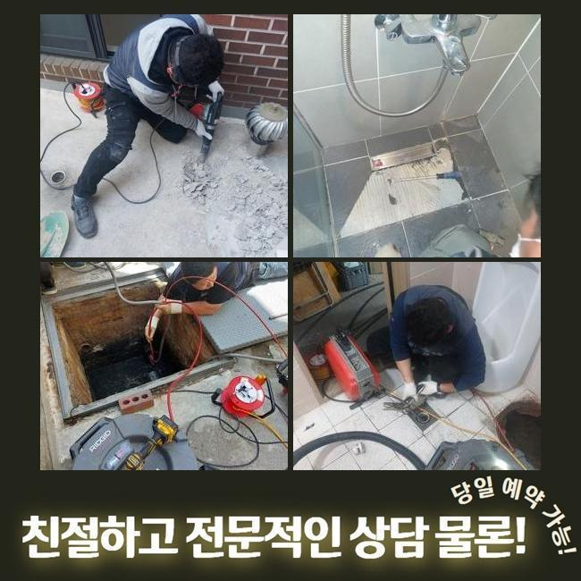
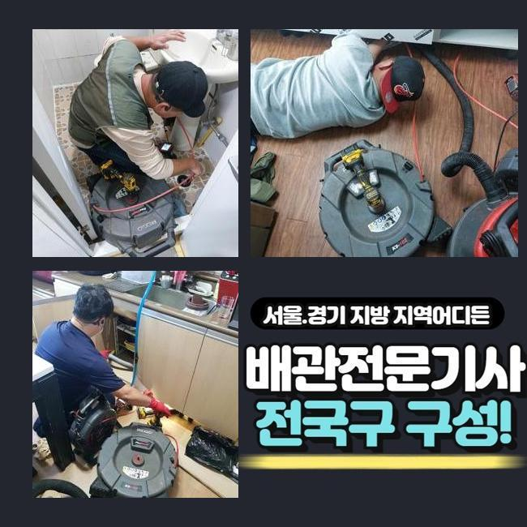
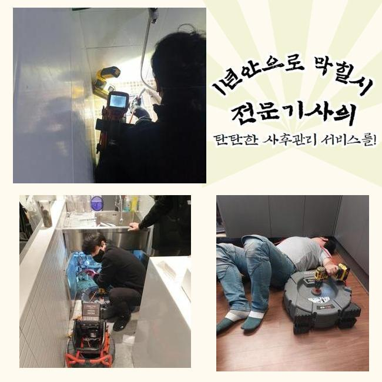
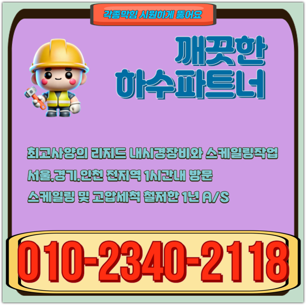

🏠 안성 신흥동세탁실막힘 죽산면 하수구청소 설비출장
안성 하수구막힘 전문 시공 후기

📋 작업 개요
- 위치: 안성
- 서비스 유형: 하수구막힘, 배관막힘, 뚫는업체, 배관청소, 고압세척
- 작업 일시: 2025. 1. 4. 15:32
- 업체명: 하수구수사대 (010-5615-2118)
🔍 문제 상황
안성 신흥동세탁실막힘 죽산면 하수구청소 설비출장
얼마전에 고객분의 집으로 방문드려 바깥쪽에 있던 하수관을 시정했는데요
전문성이 뛰어난 장비들을 이용하여 확실히 청소를 했어요
물들이 안내려가는 문제들이 나타나기 시작한건 약 1주일 정도 되었다고 합니다
배수관은 통수과정에서 자연스레 잔여물질들이 배출되는데 통로속에서 계속해서 누적되면서 통로들이 막히는데요
잔해의 양들이 많거나 덩어리가 진 상태면 심화됩니다
모든 잔해물들은 수도에 녹게되는건 제약들이 있어서입니다
이렇게 배수불가의 문제들이 발생되면 셀프의 방식으로 해결될 수 없는 경우들이 자주 있어요
고객님들이 혼자서 급하게 떠올리는것은 펑크린이나 베이킹소다 등을 부으시는 것일텐데요
증상들이 나타나고 기간들이 많이 안지났을때 효과를 볼 수 있는 조치겠지만 바깥이라면 이렇다할 해결책이 되지 못해요
야외에서 결함들이 드러날 때엔 자가조치로 풀어가는게 힘들어 전문진의 해결책을 고려하시는게 좋은데요

🔎 원인 분석
💡 전문가 진단: 정밀 진단 장비를 사용하여 슬러지의 고착 여부를 판명하고 타격/세척 작업을 실시했습니다.
전문진들의 해결을 통하여 현장에서 어떻게 정체되었는지 명확한 원인들을 짚어내는건 기본이며 염기성용액들을 쓰는 조치가 아니라 뒤탈없이 잔해물질들을 제거하여 지속적으로 하수도를 문제없이 유지시킬 수 있어요
이번 물이 안빠지는 또한 저희전문진은 적합한 장치들을 활용하여 뒤탈없이 잔해들도 제거한 후 심부까지 뚫어냈어요
진단 결과 실외의 지점에서 심화된 양상이 나타났고 조치하는것이 힘들어 출장을 의뢰하셨어요
저희들은 의뢰자분의 일정들이 가능하다라면 바로 내방하여 현장에서의 시공을 착수하죠
유선으로 연락을 받았더니 문제위치는 마당부분이였어요
단독주택 외부라인에 설치된 배수구가 막히게되어 비들이 내릴때 넘치게되는 상황으로 파악되었죠
특히 우천상황에서는 쓰레기들이나 외부유입물 등 수많은 오염원이 빠지게됩니다
물청소 등을 할때 갑작스럽게 배수구로 답답한 기색으로 흘러나가는 상황들이 많아졌다고 합니다
처음엔 의뢰인은 기간이 지나게되면 나아지겠지 생각하시어 조치들을 방관하셨대요
예기치못하게 해결이 늦었던 까닭인지 갑작스럽게 고이게되며 안내려갔다고 해요
그후에 오래도록 시간들이 지나고서 통수되는 현상을 보시고서 황급하게 의뢰를 하셨습니다

🔧 작업 과정
단독주택의 형태로서 타 세대에게 불편을 끼치진 않았지만 평상 시에 관리목적의 조치들이 이뤄져야되는 장소에요
1시간 내 출동이 이뤄지는 업체가 잘 보이지 않아 난감하셨는데 저희의경우 바로 가능하여 곧장 호출을 하신것이였죠
저희의경우 시기막론하고 휴무에도 작업하며 1년내내 시공하므로 의뢰를 받고서 달려가 이물제거에 집중했답니다
배수관은 협소하기에 육안으로 들여다보는것에는 한계들이 있습니다
하수관에 내시경을 운용시켜 관찰이 힘든 지점에 잔해물이 어떤 양상으로 존재하는지 확인합니다
내시경기기로 누적된 이물을 어떠한 방식들로 긁어내야되는지 정해진다면 합리적인 해결책을 선별해주는데요
일단은 샤프트장치를 운용하고 집수라인 근방은 고압수청소를 사용해보기로 판단했어요
샤프트의 경우엔 몸체부분과 연결되어있는 케이블에 체인형태의 노커들이 부착되어있는데 이 노커들이 벽부분에 자리한 딱딱한 것들을 탈락시키는 도구에요
전문가용 장치들을 통해서 빈틈없이 오류들을 잡아냈죠
작업시점에 혹여 수습하지 못하면 단돈 10원도 청구드리지않는다 고지해드립니다
저희의경우 애초에 해당 장소에 방문드릴때 출장금액들을 별도로 청구하지 않은채로 방문하므로 경제적인 부담이 덜하고 뚫어내지 못할 때에는 비용청구도 없으니 편히 의뢰해보세요!
작업 과정 중에 해결들이 안된채로 철수하며 출장관련 금액을 받는 절차들은 단 한건도 없다고 보장합니다
다시 현장으로 돌아와 바깥에 위치한 곳들로서 흙같은 것들도 빠져있던 형상이였고 축적된 기름성분과 한데 섞여 끈적하게 변하고 움직이지 못할정도로 굳게 변해버렸어요
각 이물들끼리 뭉친 탓에 중앙쪽을 시작으로 1차 통수 공간을 확보했어요
흡착상태가 심각해 간단하게 해결되는것은 아니였으며 심부라인까지 제거시키기위해선 집수시설부터 고압노즐 장치를 운용시켜야되는 현상이었습니다
고압세척기기들을 통해서 확실히 세척이 요구되었던 상태가었습니다
내시경을 중간중간 이용하며 깊숙한부분까지 작업을 이어갔지만 통수들이 복구된 현상들이 아니었습니다
그 이유는 폐기물과 기름때가 구간마다 큰 범위들에 걸쳐 축적되어 딱딱해진 형태였습니다


✅ 작업 완료
샤프트도구가 쓰일 수 없는 스팟으로 고압노즐분사가 요구됐습니다
발등에 불이 떨어져 고압세척으로 고착물들을 제거시키며 연결라인에 흡착된 잔해들을 작게 만들어 청소했는데요
안정적으로 청소해주니 조금씩 구멍들이 생기게되고 배수과정이 이루어지게 되었고 내부라인의 지점도 배출들이 이뤄졌죠
해당 내용들을 의뢰인에게 안내드리고 해당 장소의 해결은 완료되었어요
동일한 문제들이 야기될 수 없도록 사용하실 때 지속적으로 관리에 힘쓰시기 바라고 혹시라도 1년안쪽으로 반복해서 나타날 경우 저희업체가 무상보증을 지원하니 염려마세요!




⚠️ 하수구 배관 막힘 예방 및 관리 가이드
- ✅ 머리카락, 비닐, 물티슈 등 물에 분해되지 않는 이물질은 하수구 유입을 절대 금지해 주세요.
- ✅ 하수구 거름망을 씌우고 모여진 이물질은 주기적으로 쓰레기통에 바로 비워주셔야 합니다.
- ✅ 배관 노후가 심할 경우 이물질이 더 쉽게 걸리므로 주기적인 배관 세척(고압세척 등)을 권장합니다.
- ✅ 작업 후 1년 이내 재발 시 하수구수사대에서 무상 A/S 보증 서비스를 제공합니다.
💡 핵심 정리
- 확실한 장비 작업(내시경 점검 및 샤프트 스케일링)으로 원인을 뿌리 뽑습니다.
- 작업 후 1년 이내에 동일한 부위 재발 시 100% 무상 A/S 서비스를 보장합니다.
- 서울 · 경기 · 인천 전 지역에 24시간 언제든 긴급 출동할 수 있도록 항시 대기 중입니다.
❓ 자주 묻는 질문 (FAQ)
🚨 안성 하수구막힘 문제로 고민이신가요?
정확한 원인 진단과 확실한 시공으로 재발 없는 해결을 약속드립니다.
24시간 긴급 출동 | 서울 · 경기 · 인천 전지역 | 1년 내 재발 시 무상 A/S